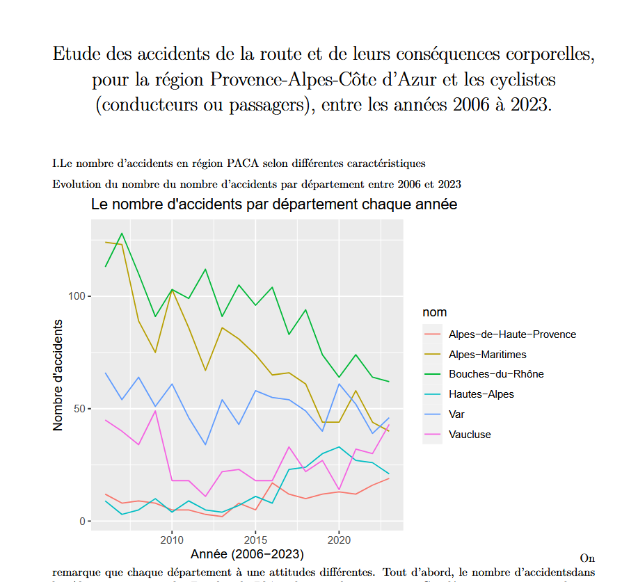

Création d’une base de données, exploitation d’une base de données, installation d’un service réseaux
- Duo w/ Yombé Diawara
- Compétences techniques :
- SQL, R
- Date :
- 2024-2025
- Le 1er projet en quelques mots :
- Dans ce projet, nous avons créé une base de données pour gérer les réservations de pistes et de chaussures dans un club de bowling. Nous avons créé la base et les tables, puis nous avons ajouté des données.
- Le 2nd projet en quelques mots :
- Dans un second projet, nous avons travaillé sur les données des accidents de la route en France sur les vingt dernières années. Nous devions, plus précisément, réaliser une étude sur les accidents et leurs conséquences corporelles pour la région 'Provence-Alpes-Côte d'Azur' concernant les cyclistes, entre 2006 et 2023. Pour ce faire, nous avons créé une base de données, nettoyé l'ensemble des données, puis réalisé une analyse statistique. Cette étude s'est déroulée sur 2 semaines et a concerné 4856 accidents.
Le 2nd projet en images :
